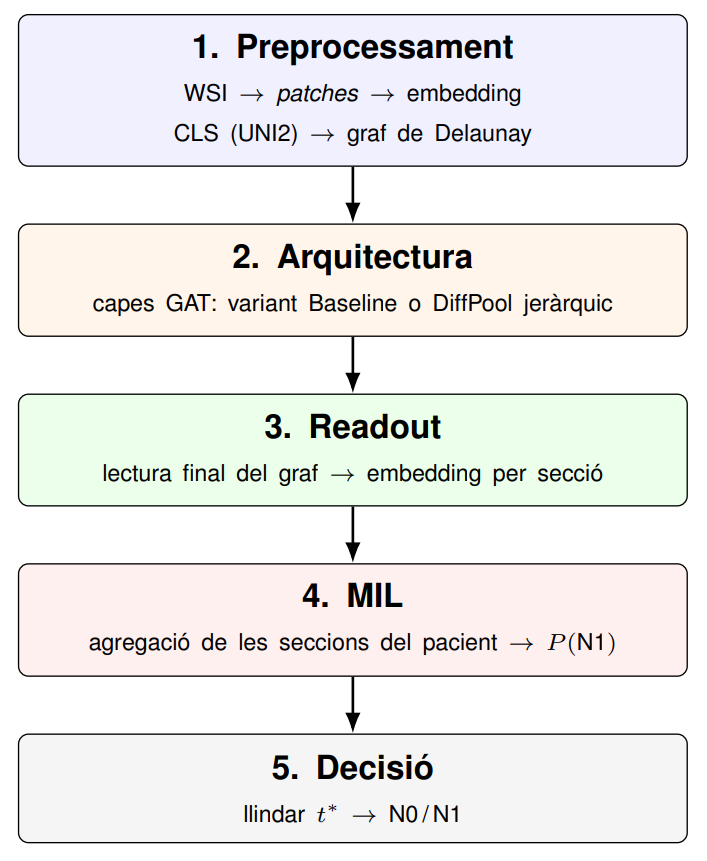
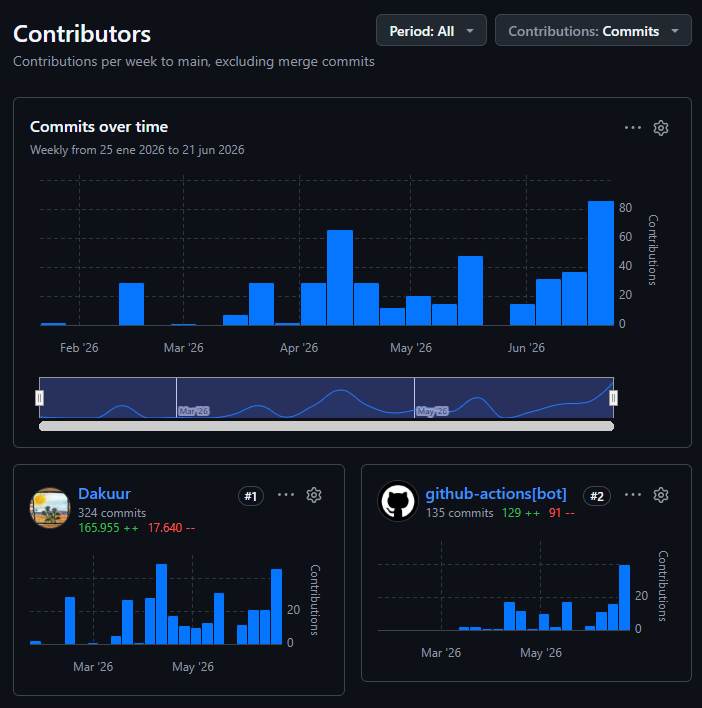

Document de suport a l'informe. L'informe és el document de referència per als detalls científics; aquí es recull el procés, les eines, el manual i l'evolució del projecte a través de les entregues.
1. Resum del projecte
El projecte construeix un sistema que, a partir d'una imatge de teixit (Whole Slide Image, WSI) d'un càncer de còlon en estadi inicial (pT1), prediu si el pacient té o no metàstasi als ganglis limfàtics (classificació N0/N1). En lloc de tractar la imatge com un conjunt de píxels, es divideix en trossos petits (patches), cada tros es representa amb un vector de característiques i es connecten segons la seva posició real al teixit, formant un graf; sobre aquest graf s'hi apliquen xarxes neuronals d'atenció (Graph Attention Networks). L'objectiu, a la llarga, és ajudar a evitar cirurgies innecessàries.

2. Dades de partida i repartiment de feina
Repartiment dins l'equip. El projecte s'ha fet en col·laboració amb un equip de la UAB al CVC. La part prèvia (obtenció de les WSI, extracció dels patches i càlcul de les característiques amb el model de fundació) la van fer altres membres de l'equip. El punt de partida de l'alumne eren les característiques ja generades; a partir d'aquí construeix els grafs, el model i tota l'avaluació.
De què es parteix. Per a cada hospital, un fitxer .npz amb les coordenades i el vector de característiques ([1, 1536]) de cada patch, i un full de càlcul (Excel) amb el diagnòstic de cada pacient (N0, N1 o NX). El codi fa un join d'aquestes dues fonts, descarta els casos NX i desa cada secció com un graf precomputat (.pt de PyTorch Geometric), llest per entrar a la xarxa.
Privadesa. Totes les dades estaven anonimitzades (no contenien cap informació que permetés identificar els pacients) i s'han tractat dins el marc de col·laboració amb el CVC i els hospitals que van cedir les mostres.
3. Estudi de viabilitat
Tècnica. Viable amb programari lliure i la infraestructura del CVC. Les peces clau (model de fundació preentrenat, llibreries de grafs i d'optimització) són madures.
Temporal. Feina repartida en fases (dades, grafs, model, cerca d'hiperparàmetres, redacció); el càlcul pesat es pot paral·lelitzar i reprendre sense perdre feina.
De dades. Volum suficient per entrenar i avaluar, tot i que limitat per a conclusions clíniques definitives.
Camí cap a un ús real. És una eina de recerca i de suport a la decisió, no un producte clínic: no es pot fer servir sobre pacients reals sense validació externa prèvia. A més, depèn que tots els passos anteriors a la diagnosi (extracció de patches, característiques, construcció del graf) es facin bé, i idealment hauria de tenir un sistema d'interpretabilitat per localitzar regions crítiques (no perfeccionat, perquè l'objectiu central era construir un model sòlid).
Riscos i mitigació. Desbalanceig de classes (particions estratificades, pesos i llindar ajustat); test petit (validació creuada i limitacions reportades); cost de càlcul (infraestructura existent i cerca reprenible).
4. Codi i manual d'usuari
Repositori principal (propi): github.com/Dakuur/tfg — memòria (LaTeX), frontend de visualització i workflows de CI/CD.
Submòdul (compartit): github.com/IAM-CVC/PT1Diagnosis (branca DavidMorillo) — codi fet conjuntament amb l'equip del CVC i que s'executa al servidor (grafs, model i cerca). És privat: cal demanar permís per consultar-lo.
Manual d'execució
S'assumeix accés al servidor del CVC, on hi ha les dades (/mnt/iam/) i la GPU.
# 1. Clonar amb submòduls
git clone --recurse-submodules https://github.com/Dakuur/tfg
# 2. Entorn i dependències (Python, PyTorch 2.5.1 + PyTorch Geometric)
python -m venv .venv && source .venv/bin/activate
pip install -r pt1diagnosis/sweep/requirements.txt
# 3. Construir els grafs (un sol cop; genera el split i separa el test)
python pt1diagnosis/scripts_david/build_dataset.py
# 4. Cerca d'hiperparàmetres (Optuna; reprenible)
cd pt1diagnosis && python -m sweep
# 5. Reentrenar i avaluar el millor model sobre el test
python -m sweep --finalize
# 6. Explorar resultats amb el frontend web
./frontend/start_frontend.sh # http://localhost:8000Disseny modular: construcció de grafs, model, entrenament i cerca separats; configuració per YAML; la cerca es pot aturar i reprendre.
Monitoratge (W&B): durant l'entrenament i la cerca s'usa Weights & Biases per registrar mètriques en temps real (tant com del hardware com estadístiques del model) i comparar configuracions.
Frontend web: interfície pròpia que mostra el WSI amb els patches, els grafs de Delaunay, un selector de model (carrega qualsevol checkpoint i n'infereix l'arquitectura) i una pestanya d'estadístiques (ROC/PR, matriu de confusió, mètriques).
5. Entregues i evolució
Cada entrega té el seu PDF, el seu codi LaTeX, i els canvis realitzats al repositori des de l'entrega anterior, per a poder comparar els canvis. Fes clic a cada entrega per veure què s'hi va fer de nou.
Punt de partida del projecte i primera versió de la memòria:
- Posada en marxa al servidor del CVC i primeres proves del model GAT (amb suport de GPU).
- Primera versió de la memòria en LaTeX i workflow de CI/CD que compila el PDF automàticament.
- Primera visualització del graf de Delaunay sobre el teixit.
Es construeix el nucli del sistema:
- Pipeline de dades complet: càrrega dels
.npz+ Excel i construcció dels grafs de Delaunay (triangulació + poda d'arestes). - Refactor modular del codi, pesos de classe i segona arquitectura: DiffPool jeràrquic entre capes GAT.
- Predicció a nivell de pacient (MIL).
- Primer frontend web de visualització (graf sobre el WSI, atenció, clic per veure el patch).
- Primer grid search i integració amb Weights & Biases.
- Memòria ampliada: pipeline patch→CLS→graf, diagrames d'arquitectura i referències noves.
Es consolida la metodologia i els resultats:
- Adaptació al dataset real amb xifres definitives (367 pacients, 1607 grafs) i migració del codi al submòdul compartit
pt1diagnosis. - Canvi a validació creuada 5-fold estratificada per a la cerca (en lloc de hold-out).
- Llindar operatiu derivat del val (sensibilitat 100% sense data leakage), comparació amb les guies clíniques i figura ROC.
- Frontend: AUC de CV amb desviació, boxplot de models, pestanya del dataset.
- Memòria: taules d'efectes dels hiperparàmetres i format d'apèndix.
Cerca avançada i resultats finals:
- Pas del grid search a la cerca bayesiana amb Optuna/TPE, amb dos estudis aïllats (un per arquitectura).
- Procediment d'avaluació final: reentrenament 90/10, test únic i re-avaluació de configuracions per triar el model definitiu.
- Resultats reals del sweep (GAT Baseline vs DiffPool) i nova figura ROC.
- Frontend: pàgina de visualització del sweep i atenció multi-capa.
- Memòria: paràmetres configurables, esquema d'entrenament, diagrama de variants i annexos.
Polit i tancament del document:
- Correccions de redacció i unificació del relat.
- Reestructuració del pipeline i dels annexos (bloc de decisió, MIL amb més detall, comparació de llindars operatius).
- Ampliació de l'explicació de la importància dels hiperparàmetres (fANOVA).
- Correccions d'estil: ortografia, títol, secció d'agraïments.
Visió global del repositori
El repositori acumula ~470 commits. D'aquests, ~130 (≈28%) els genera un bot de CI/CD que recompila i puja el PDF a cada canvi de l'informe. La taula resumeix on es va concentrar l'esforç entre entregues (●●● intens · ●● moderat · ● puntual · – cap). El recompte de la fase inicial és baix perquè la recerca i les proves prèvies amb PyTorch Geometric es van fer en local, sense repositori.
| Tipus de canvi | Feb | Març | 1a q. abr | abr-maig | 1a q. juny | 2a q. juny |
|---|---|---|---|---|---|---|
| Construcció de grafs i dades | – | ●●● | ●● | ●● | – | – |
| GAT (arquitectura base) | ● | – | ●●● | ● | ● | – |
| DiffPool jeràrquic | – | – | ●●● | ● | ●● | – |
| Readout | – | – | ●● | ●● | ● | – |
| MIL (agregació per pacient) | – | – | ●●● | ● | ● | – |
| Cerca d'hiperparàmetres | – | – | ● | ●●● | ●●● | ● |
| Article / memòria | – | ●● | ●●● | ●●● | ●●● | ●●● |
| Eines / frontend | – | ●● | ●●● | ●● | ● | – |
| Infraestructura / CI/CD | ●●● | ●● | ● | ● | ● | – |

L'informe s'ha treballat des de molt aviat (ja al març), no només al final: per familiaritzar-se amb LaTeX, tenir l'estructura completa des del principi i que la tutora en pogués seguir l'evolució a cada reunió.
6. Canvis a l'informe final derivats de les reunions amb la tutora
- Estructura. L'estat de l'art passa abans dels objectius i es crea una secció de disseny experimental (desbalanceig de classes, divisió de dades, mètriques...). Seccions innecessàries eliminades, substituides per paràgrafs individuals en una sola secció.
- Objectius. Reordenació d'objectius, i menys repetició d'ells en la resta del document.
- Dades. Millor explicació de la partició i utiltizació de les dades per a la cerca de paràmetres i entrenament final.
- Estat de l'art. Reorganitzat en blocs (guies clíniques → MIL → grafs en histopatologia → models de fundació).
- Mètode i arquitectura. Pipeline reordenat (preprocessament → arquitectures → readout → agregació), acompanyat d'una figura auxiliar, i concepte de readout unificat per a totes dues arquitectures. Millor explicació de la cerca del millor llindar, amb figura de suport.
- Resultats i figures. A les taules es deixen només mètriques de validació; es revisen els gràfics i s'afegeix la corba ROC del millor model. Nous gràfics al cos per a agilitzar la comprensió.
- Conclusions. Estructurat com a "Discussió i conclusions", incloent-hi la subsecció de "limitacions".
- Estil i annexos. Es retiren negretes innecessàries i es reorganitzen els annexos per ajustar-se als límits de pàgines. Es seleccionen els annexos realment últls per al projecte.
7. Declaració d'ús d'eines d'intel·ligència artificial
Tal com demana la normativa de l'assignatura, s'indica quines eines d'IA s'han fet servir, per a què i fins a quin punt. En tots els casos han estat un suport formal o una ajuda tècnica puntual, sempre sota la supervisió i la revisió de l'alumne: les decisions de fons (plantejaments, mètodes, disseny i execució dels experiments, anàlisi i conclusions) són feina de l'alumne, juntament amb la tutora.
Google Gemini (assistent de recerca, etapes inicials)
- Ajudar a buscar articles relacionats amb l'objectiu i els mètodes (després verificats i redactats per l'alumne).
- Orientar sobre les mètriques actuals del diagnòstic del càncer colorectal (CRC).
- Fer una primera introducció als conceptes de les Graph Attention Networks (GAT).
Claude Code (ajuda tècnica)
- Ajudar a donar format al codi i a taules, figures i altres elements de LaTeX de l'informe.
- Ajudar a programar i revisar el codi dels primers experiments end-to-end (el disseny i l'execució van ser de l'alumne), detectant bugs.
- Ajudar a corregir errors puntuals (bug fixing).
- Ajudar a programar el frontend web (JavaScript), una eina auxiliar de visualització que no forma part del contingut avaluat.
- Maquetar aquesta pàgina del dossier (HTML + CSS). No tinc gaire experiència en disseny web i és una part purament de presentació: l'objectiu és que el dossier sigui visualment agradable i s'entengui bé. El contingut, el text i el raonament del dossier s'ha escrit amb el criteri propi de l'alumne.
Usos que no s'han fet
- Treure conclusions o interpretar els resultats.
- Proposar mètodes (MIL, readout, llindar, etc.) sense haver-ho consultat abans en articles o amb la tutora.
- Els plantejaments del treball.